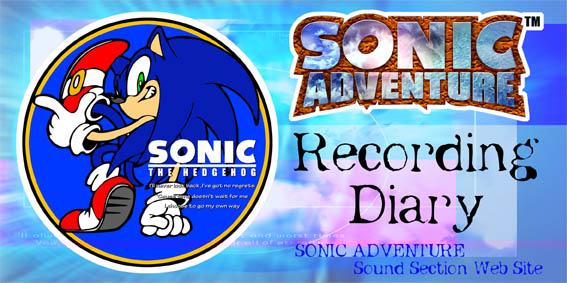

ここでは、ソニックアドベンチャーの様々の曲をレコーディングしていた時の様子(?)を見ることが出来るよ。 とりあえず、第1弾は「ナックルズ、エミー、ビッグのテーマソング」を録ったニューヨークレコーディング編だよ!! どんな珍道中だったのやら!? その他のものはまだ準備中なので、ちょっと待ってて下さいね。
Contents... New York Sessions Los Angeles Sessions Tokyo Sessions